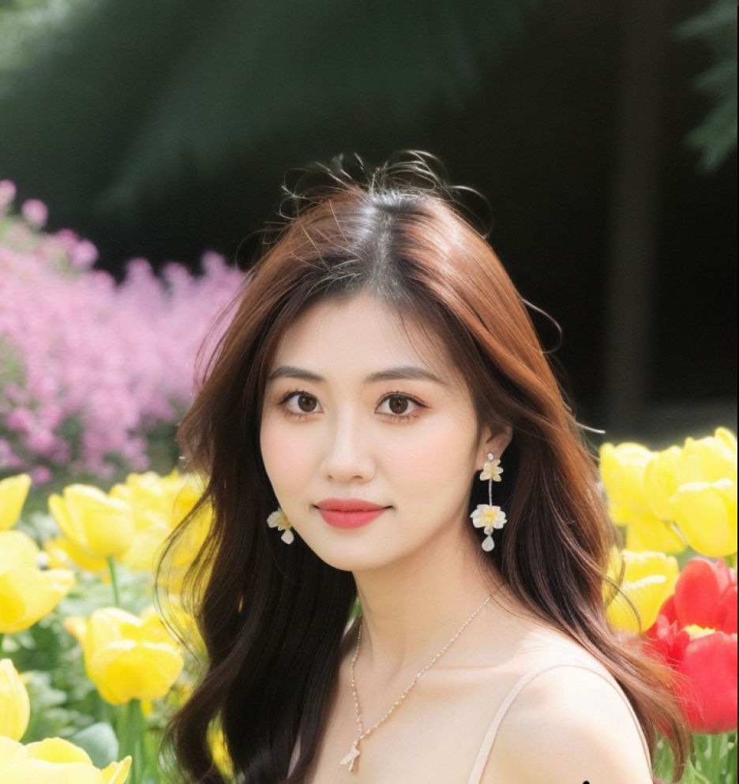

Phone Choice Theater
Choose a phone through everyday scenarios. Understand the trade-offs between budget, photography and comfort.
Try the prototype ↗Prototype · Authorized Vercel sign-in required

Creating value through ideas, turning data, technology and everyday life into experiences.
Explore my work ↓Selected work
From recent experiments to earlier explorations.
Choose a phone through everyday scenarios. Understand the trade-offs between budget, photography and comfort.
Try the prototype ↗Prototype · Authorized Vercel sign-in required
Discover a weekend idea that fits your mood, time and budget.
Find an idea ↗Authorized Vercel sign-in required
Explore data science and machine learning projects from graduate studies.
View collection ↗Graduate project collection
Engineering and analytical projects exploring analysis, design and practical applications.
View collection ↗Undergraduate project collection
Notes & reflections
Thoughts on technology, data and discoveries in everyday life.
Get in touch
Share an idea, send feedback, or explore something new together.